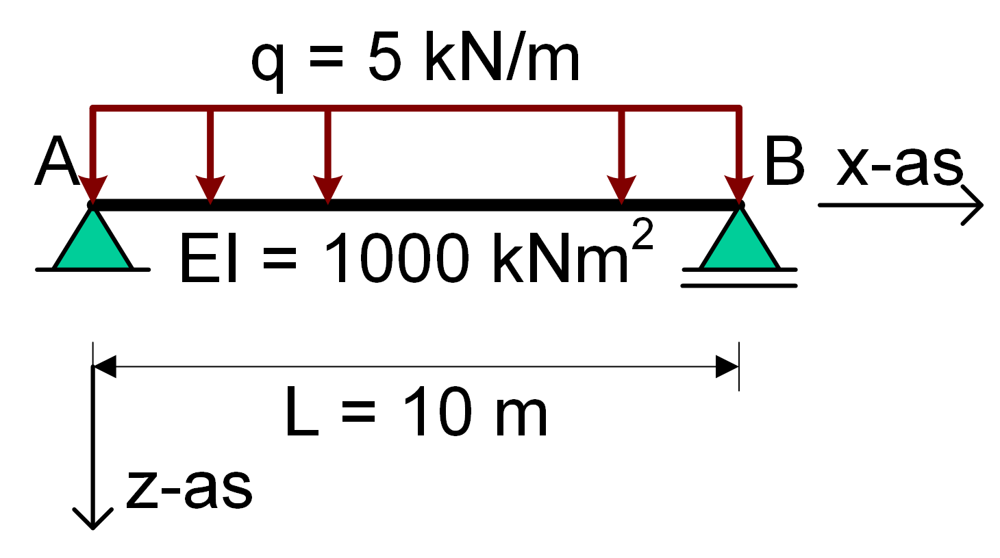
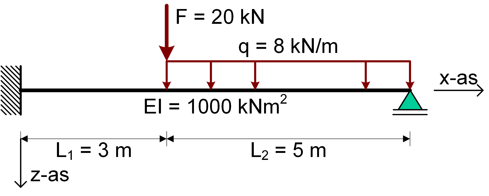

Introductie SymPy voor Matrixframe opdracht
Contents
Introductie SymPy voor Matrixframe opdracht#
In deze iPython notebook wordt het gebruik van Python voor het MatrixFrame practicum toegelicht.
Opdracht 1#

Allereest moeten de bibliotheken worden geïmporteerd. SymPy is de symbolische rekenbibliotheek voor Python
import numpy as np
import matplotlib.pyplot as plt
import sympy as sp
Alle wiskundige symbolen die later rechts van het = teken worden geïntroduceerd moeten eerst gedefinieerd worden zodat Python weet dat het om SymPy variabelen gaat. Daarbij moet voor de zakking moet worden aangegeven dat het een functie is.
Daarnaast moeten ook alle mogelijk integratieconstantes moeten worden gedefinieerd.
q, x = sp.symbols('q x')
L, EI = sp.symbols('L EI')
C1, C2, C3, C4 = sp.symbols('C1 C2 C3 C4')
De verplaatsingsfunctie kan dan geworden worden door viermaal te integreren met integrate, let op dat de je dan ook handmatig de integratieconstrantes definieert.
Met display wordt een variabele op een nette wiskundige manier weergegeven
V = sp.integrate(-q,x)+C1
M = sp.integrate(V,x)+C2
kappa = M / EI
phi = sp.integrate(kappa,x)+C3
w = sp.integrate(-phi,x)+C4
display(w)
Nu kunnen de randvoorwaarden worden ingevuld. Met .subs vervang je een variabele in een vergelijking door een andere variabele of een getal. Met sp.Eq definieer je een vergelijking met een linker en rechterzijde.
Eq1 = sp.Eq(w.subs(x, 0), 0)
Eq2 = sp.Eq(w.subs(x, L), 0)
Eq3 = sp.Eq(M.subs(x, 0), 0)
Eq4 = sp.Eq(M.subs(x, L), 0)
display(Eq1,Eq2,Eq3,Eq4)
De integratieconstantes kunnen nu worden opgelost. Met sp.solve wordt de set vergelijkingen van de randvoorwaarden opgelost voor de onbekende integratieconstantes.
sol = sp.solve((Eq1,Eq2,Eq3,Eq4),(C1,C2,C3,C4))
display(sol)
{C1: L*q/2, C2: 0, C3: -L**3*q/(24*EI), C4: 0}
De gevonden integratieconstructies kunnen nu worden ingevoerd in de originele functie voor \(w\)
w_sol = w.subs(sol)
display(w_sol)
Voor de numerieke waarde kunnen de symbolen worden vervangen door getalwaardes.
w_subs = w_sol.subs([(EI,1000),(q,5),(L,10)])
display(w_subs)
Om de gevonden functie te plotten is het handig de SymPy vergelijking om te schrijven naar NumPy functie, sp.lambdify doet dat voor je. Vervolgens kan je met bekende functies van NumPy en Matplotlib een grafiek plotten.
w_numpy = sp.lambdify(x,w_subs)
x_plot = np.linspace(0,10,50)
w_plot = w_numpy(x_plot)
plt.plot(x_plot,w_plot)
plt.gca().invert_yaxis() # draait de y-as om
plt.title("w-lijn")
plt.axhline(0,color='black') #geeft een horizontale lijn op w=0 weer
plt.xlim(0,10)
plt.annotate('%.2f m' % w_numpy(5), xy = [5,w_numpy(5)]) #geeft de getalswaarde weer in de grafiek
plt.axis('off');
De \(\phi\), \(M\) en \(V\)-lijn kunnen op gelijke wijze worden gevonden als de \(w-\)lijn.
phi_sol = phi.subs(sol)
display(phi_sol)
phi_subs = phi_sol.subs([(EI,1000),(q,5),(L,10)])
display(phi_subs)
phi_numpy = sp.lambdify(x,phi_subs)
phi_plot = phi_numpy(x_plot)
plt.figure()
plt.plot(x_plot,phi_plot)
plt.gca().invert_yaxis()
plt.title("phi-lijn")
plt.axhline(0,color='black')
plt.xlim(0,10)
plt.annotate('%.2f m/m' % phi_numpy(0),xy = [0,phi_numpy(0)])
plt.annotate('%.2f m/m' % phi_numpy(10),xy = [10,phi_numpy(10)])
plt.axis('off');
M_sol = M.subs(sol)
display(M_sol)
M_subs = M_sol.subs([(EI,1000),(q,5),(L,10)])
display(M_subs)
M_numpy = sp.lambdify(x,M_subs)
M_plot = M_numpy(x_plot)
plt.figure()
plt.plot(x_plot,M_plot)
plt.gca().invert_yaxis()
plt.title("M-lijn")
plt.axhline(0,color='black')
plt.xlim(0,10)
plt.annotate('%.1f kNm' % M_numpy(5),xy = [5,M_numpy(5)])
plt.axis('off');
V_sol = V.subs(sol)
display(V_sol)
V_subs = V_sol.subs([(EI,1000),(q,5),(L,10)])
display(V_subs)
V_numpy = sp.lambdify(x,V_subs)
V_plot = V_numpy(x_plot)
plt.figure()
plt.plot(x_plot,V_plot)
plt.gca().invert_yaxis()
plt.title("V-lijn")
plt.axhline(0,color='black')
plt.xlim(0,10)
plt.annotate('%.1f kN' % V_numpy(0),xy = [0,V_numpy(0)])
plt.annotate('%.1f kN' % V_numpy(10),xy = [10,V_numpy(10)])
plt.axis('off');
Opdracht 2#
Opdracht 2#
ALs de ligger uit meerdere velden bestaat, kan deze met meerdere differentiaalvergelijkingen worden opgelost.

Voor elk veld moeten allereerst apart de symbolen worden gedefiniëerd
q1, q2 = sp.symbols('q1 q2')
F, L1, L2, EI = sp.symbols('F L1 L2 EI')
C1, C2, C3, C4, C5, C6, C7, C8 = sp.symbols('C1 C2 C3 C4 C5 C6 C7 C8')
x = sp.symbols('x')
De vergelijkingen moeten gelijktijdig worden opgelost zodat er 8 verschillende integratieconstantes worden opgesteld
V1 = sp.integrate(-q1,x)+C1
M1 = sp.integrate(V1,x)+C2
kappa1 = M1 / EI
phi1 = sp.integrate(kappa1,x)+C3
w1 = sp.integrate(-phi1,x)+C4
display(w1)
V2 = sp.integrate(-q2,x)+C5
M2 = sp.integrate(V2,x)+C6
kappa2 = M2 / EI
phi2 = sp.integrate(kappa2,x)+C7
w2 = sp.integrate(-phi2,x)+C8
display(w2)
Eq1 = sp.Eq(w1.subs(x,0),0)
Eq2 = sp.Eq(phi1.subs(x,0),0)
Eq3 = sp.Eq(w1.subs(x,L1),w2.subs(x,L1))
Eq4 = sp.Eq(M1.subs(x,L1),M2.subs(x,L1))
Eq5 = sp.Eq(V1.subs(x,L1),V2.subs(x,L1)+F)
Eq6 = sp.Eq(phi1.subs(x,L1),phi2.subs(x,L1))
Eq7 = sp.Eq(w2.subs(x,L1+L2),0)
Eq8 = sp.Eq(M2.subs(x,L1+L2),0)
display(Eq1,Eq2,Eq3,Eq4,Eq5,Eq6,Eq7,Eq8)
sol = sp.solve((Eq1,Eq2,Eq3,Eq4,Eq5,Eq6,Eq7,Eq8),(C1,C2,C3,C4,C5,C6,C7,C8))
display(sol[C1])
display(sol[C2])
display(sol[C3])
display(sol[C4])
display(sol[C5])
display(sol[C6])
display(sol[C7])
display(sol[C8])
w1_sol = w1.subs(sol)
w2_sol = w2.subs(sol)
display(w1_sol,w2_sol)
w1_subs = w1_sol.subs([(EI,1000),(F,20),(q1,0),(q2,8),(L1,3),(L2,5)])
w2_subs = w2_sol.subs([(EI,1000),(F,20),(q1,0),(q2,8),(L1,3),(L2,5)])
display(w1_subs,w2_subs)
x1_plot = np.linspace(0,3,30)
x2_plot = np.linspace(3,8,80)
w1_numpy = sp.lambdify(x,w1_subs)
w2_numpy = sp.lambdify(x,w2_subs)
w1_plot = w1_numpy(x1_plot)
w2_plot = w2_numpy(x2_plot)
plt.plot(x1_plot,w1_plot)
plt.plot(x2_plot,w2_plot)
plt.gca().invert_yaxis()
plt.title("w-lijn")
plt.axhline(0,color='black')
plt.xlim(0,8)
plt.annotate('%.2f m' % w1_numpy(3),xy = [3,w1_numpy(3)])
plt.axis('off');
phi1_sol = phi1.subs(sol)
phi2_sol = phi2.subs(sol)
display(phi1_sol, phi2_sol)
phi1_subs = phi1_sol.subs([(EI,1000),(F,20),(q1,0),(q2,8),(L1,3),(L2,5)])
phi2_subs = phi2_sol.subs([(EI,1000),(F,20),(q1,0),(q2,8),(L1,3),(L2,5)])
display(phi1_subs, phi2_subs)
phi1_numpy = sp.lambdify(x,phi1_subs)
phi2_numpy = sp.lambdify(x,phi2_subs)
phi1_plot = phi1_numpy(x1_plot)
phi2_plot = phi2_numpy(x2_plot)
plt.figure()
plt.plot(x1_plot,phi1_plot)
plt.plot(x2_plot,phi2_plot)
plt.gca().invert_yaxis()
plt.title("phi-lijn")
plt.axhline(0,color='black')
plt.xlim(0,8)
plt.annotate('%.4f m/m' % phi1_numpy(3),xy = [3,phi1_numpy(3)])
plt.annotate('%.4f m/m' % phi2_numpy(8),xy = [8,phi2_numpy(8)])
plt.axis('off');
M1_sol = M1.subs(sol)
M2_sol = M2.subs(sol)
display(M1_sol, M2_sol)
M1_subs = M1_sol.subs([(EI,1000),(F,20),(q1,0),(q2,8),(L1,3),(L2,5)])
M2_subs = M2_sol.subs([(EI,1000),(F,20),(q1,0),(q2,8),(L1,3),(L2,5)])
display(M1_subs, M2_subs)
M1_numpy = sp.lambdify(x,M1_subs)
M2_numpy = sp.lambdify(x,M2_subs)
M1_plot = M1_numpy(x1_plot)
M2_plot = M2_numpy(x2_plot)
plt.figure()
plt.plot(x1_plot,M1_plot)
plt.plot(x2_plot,M2_plot)
plt.gca().invert_yaxis()
plt.title("M-lijn")
plt.axhline(0,color='black')
plt.xlim(0,8)
plt.annotate('%.2f kNm' % M1_numpy(0),xy = [0,M1_numpy(0)])
plt.annotate('%.2f kNm' % M1_numpy(3),xy = [3,M1_numpy(3)])
plt.annotate('%.2f kNm' % M2_numpy(5.5),xy = [5.5,M2_numpy(5.5)])
plt.axis('off');
V1_sol = V1.subs(sol)
V2_sol = V2.subs(sol)
display(V1_sol, V2_sol)
V1_subs = V1_sol.subs([(EI,1000),(F,20),(q1,0),(q2,8),(L1,3),(L2,5)])
V2_subs = V2_sol.subs([(EI,1000),(F,20),(q1,0),(q2,8),(L1,3),(L2,5)])
display(V1_subs, V2_subs)
V1_numpy = sp.lambdify(x,V1_subs)
V2_numpy = sp.lambdify(x,V2_subs)
V1_plot = V1_numpy(x1_plot)
V2_plot = V2_numpy(x2_plot)
plt.figure()
plt.plot([0,3],[V1_plot,V1_plot])
plt.plot(x2_plot,V2_plot)
plt.gca().invert_yaxis()
plt.title("V-lijn")
plt.axhline(0,color='black')
plt.xlim(0,8)
plt.annotate('%.2f kN' % V1_numpy(0),xy = [0,V1_numpy(0)])
plt.annotate('%.2f kN' % V1_numpy(3),xy = [3,V1_numpy(3)])
plt.annotate('%.2f kN' % V2_numpy(3),xy = [3,V2_numpy(3)])
plt.annotate('%.2f kN' % V2_numpy(8),xy = [8,V2_numpy(8)])
plt.axis('off');